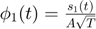
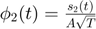
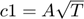
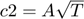
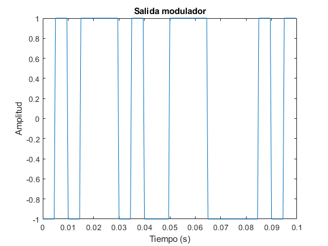
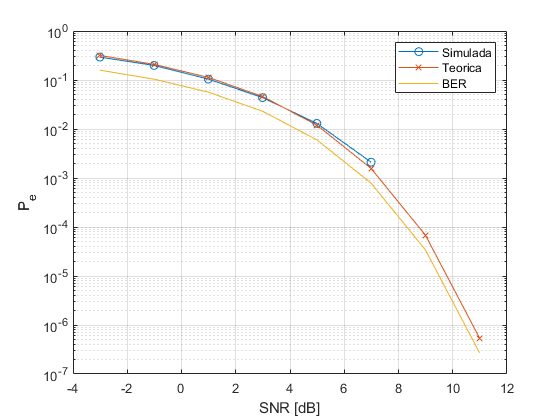

Practica 2 - Detección digital en banda base
Contents
Maria José Medina y Teresa González
En esta práctica se diseñan los bloques Modulador, Demodulador y Detector y se integran para llevar a cabo una detección digital en banda base completa. También se calcula la probablidad de error añadiendo un ruido en el canal.
clear all; close all;
2. Modulador
Periodo, periodo de muestreo y número de símbolos.
T=10*10^-3; Ts=T/20; A=1; N=10;
Simbolos a transmitir
s1= A*ones(1, T/Ts); s2= A*[ones(1,T/(2*Ts)), - 1*ones(1,T/(2*Ts))]; s3= -A*ones(1, T/Ts); s4= A*[-1*ones(1,T/(2*Ts)), 1*ones(1,T/(2*Ts))];
Funciones base ortogonales y ortonormales
phi1=1/(A*sqrt(T))*s1; phi2=1/(A*sqrt(T))*s2;
Calculamos los coeficientes para cada base de forma teórica, sabiendo que cumplen c1*phi1=s1, y c2*phi2=s2.




Calculamos los coeficientes para cada símbolo y los ponemos en forma de matriz tamaño nºsimbolos* nºbases.
c1= [A*sqrt(T), 0]; c2=[0, A*sqrt(T)]; c3=[-A*sqrt(T),0]; %con phi1 c4=[0,-A*sqrt(T)]; %con phi2 c= [c1; c2;c3;c4];
Ejercicio 2.1
Generamos un vector de entrada aleatorio de tamaño N compuesto por los códigos que representan los símbolos s1, s2, s3 y s4. Nuestro código será s1=1, s2=2, s3=3, s4=4.
s=randi([1,4],1,N);
Modulamos el vector s con la función Modulador. Además del vector de entrada, esta función recibe T, Ts, las funciones base y los coeficientes. La salida del modulador será una señal combinación de los coeficientes correspondientes con cada base.
s_t=Modulador(T,Ts,N,phi1, phi2, c, s); % Representacion salida modulador s_t1=reshape(s_t',1,[]); t=0:Ts:200*Ts - Ts; figure() plot (t, s_t1) title('Salida modulador') xlabel('Tiempo (s)') ylabel('Amplitud')
Como se puede observar en la gráfica, la amplitud a la salida del modulador en cada periodo de símbolo (0.01 s) coincide con la amplitud del símbolo esperado (asociado a un número del código) en dicho periodo.
3. Demodulador
Se utiliza como argumento de entrada a la función Demodulador T, Ts, N (número de símbolos), funciones base y la salida del modulador. La salida de la función Demodulador devuelve dos vectores que corresponden a los valores finales de los vectores de correlación entre la señal modulada y las funciones base. Este punto es donde se encuentra la máxima diferencia teórica.
[r1,r2]=Demodulador(T,Ts,N, phi1, phi2, s_t);
Se puede observar como tanto los elementos de r1 como los de r2 se encuentran entre 0 (minimo) y aproximadamente 0.1, que es el maximo valor de los coeficientes, y a su vez la maxima diferencia. Se comprueban que el valor de las salidas para cada elemento del vector de la señal modulada es el correcto. Por ejemplo, r1(s1)=0.1, r1(s3)=-0.1, r1(2 y 4)=0 aprox. (diferencia negativa).
Detección
La función de detección recibe los dos valores de correlación con las bases, los coeficientes de cada base y el N símbolos. Mediante el cálculo de la mínima distancia entre los coeficientes iniciales y los valores de correlación, esta función decide cuáles han sido los símbolos transmitidos con mayor probabilidad y y devuelve un vector con los códigos(1,2,3 o 4) de los mismos.
s_hat=Detector(r1,r2, c,N);
Probabilidad de error
A continuación se estudia el comportamiento del sistema añadiendo ruido blanco gausiano en el canal. Se evalúa la probabilidad de error y la SNR.
M=4; % 4-symbol alphabet EsN0_dB = 0:2:20; % Vector to simulate esn0_lin=10.^(EsN0_dB/10); ebn0_lin=esn0_lin/log2(M); EbN0_dB=10*log10(ebn0_lin); Nsymb = 10000; % Number of symbols numErr = zeros(1,length(EsN0_dB)); % Pre-allocation % Compute Pe for every SNR value
Tx Generar señal random con Nsymb símbolos, posibles valores de 1 a M.
s = randi([1,M],1,Nsymb); % Modulador s_t = Modulador(T,Ts,Nsymb,phi1,phi2, c, s); for iter_EsN0= 1:length(EsN0_dB)
Canal Compute symbols' power
SNR_awgn_dB=EsN0_dB(iter_EsN0)-10*log10(0.5*T/Ts); % Compute corresponding SNR for the signal r_t = awgn(s_t,SNR_awgn_dB,'measured'); % Add noise
Rx Demodulador
[r1,r2] = Demodulador(T,Ts,Nsymb,phi1,phi2, r_t); % Or correlationType % Detector s_hat = Detector(r1,r2,c,Nsymb); % Decided symbols
Calcular el número de error, comparando si la señal detectada y la transmitida son iguales en cada iteración. Si no son iguales, acumula + 1 error.
numErr(iter_EsN0) = sum(s_hat~=s);
end
Calculo probabilidad de error por símbolo = nº fallos/nº símbolos
Pe = numErr/Nsymb;
Representacion resultados
figure semilogy(EbN0_dB,Pe,'o-') grid on xlabel('SNR [dB]') ylabel('P_e') PeTheo = 2*qfunc(sqrt(2*log2(M)*ebn0_lin)*sin(pi/M)); PeTheo(find(PeTheo<1e-7))=NaN; BERTheo=PeTheo/log2(M); BERtheo(find(BERTheo<1e-5))=NaN; hold on semilogy(EbN0_dB,PeTheo,'x-') semilogy(EbN0_dB,BERTheo) legend('Simulada','Teorica','BER')
Se puede observar en la gráfica cómo la probabilidad de error disminuye de forma logarítima conforme va aumentando la SNR. Esta disminución es prácticamente idéntica tanto para la SNR teórica como para la simulada con ruido blanco gaussiano.